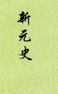

| 历史史籍 > |
| 新元史 |
| 柯劭忞 编著 |
| 新元史，纪传体断代史，本纪26、表7、志70、列传154，共257卷。 由于明代的《元史》编纂工作过于草率，错误百出，后代学者皆呼吁重修元史。柯劭忞以《元史》为底本，利用明清有关元史的研究，例如参考《元经世大典》残本、《元典章》，又吸收了西方有关元史的研究成果，例如法国的《多桑蒙古史》、波斯人拉施特《蒙古全史》等书，参考《四库全书》未收录之秘籍及元碑拓本等，以三十年之功，重修新史。 《新元史》于1920年编撰成。第二年，北洋军阀政府总统徐世昌，下令把《新元史》列入正史，1922年刊行于世。这样，原来的“二十四史”就成了“二十五史”。若再加上《清史稿》则称为“二十六史”。此书虽然成书于民国，但当时还“尚有天子在”，编撰者是站在清朝的立场上的，大清与大元立国有其相似性，这样跟一般的修前朝史有一定的不同了。不仅论述都是“史臣曰”，在《宗室世表序》里甚至说：“……然后知先王封建之制为不可易也。” 此书集500多年各家研究之大成，补充了许多新内容，纠正了不少错误，虽然尚不能替代《元史》，但确是研究元代历史的一部重要的、有价值的参考书。 [按，此电子文档OCR错误较多（形近而讹），难以逐字校对，请留意。2019年6月，整理，2] |
 |